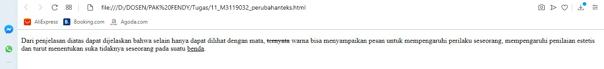

Menandai perubahan teks
Menandai sebuah perubahan teks dalam html terdapat dua jenis yaitu tanda untuk
sisipan teks baru dan tanda untuk teks yang telah dihapus. Untuk memberi tanda perubahan teks yang berupa
sisipan teks baru caranya adalah dengan menuliskan tag ins.
Sedangkan untuk menandai teks yang telah dihapus menggunakan del.
Codingan
<!DOCTYPE html>
<html>
<head>
<title>Menandai perubahan teks</title>
</head>
<body>
<p>
Dari penjelasan diatas dapat dijelaskan bahwa selain hanya dapat dilihat
dengan mata, <del>ternyata</del> warna bisa menyampaikan pesan untuk mempengaruhi
perilaku seseorang, mempengaruhi penilaian estetis dan turut menentukan suka
tidaknya seseorang pada suatu <ins>benda</ins>.
</p>
</body>
</html>
Hasil codingan

Analisis
gambar diatas menunjukan hasil codingan perubahan teks yaitu tanda untuk sisipan teks baru dan
tanda untuk teks yang telah dihapus seperti pada kata diatas yaitu benda
dan ternyata
.
Back